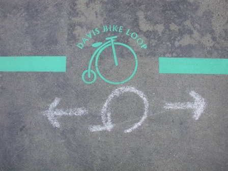

The Story Behind the Davis Bikeloop

The Davis Bike Loop is an approximately 12 mile long route that runs through the city of Davis. Along this route, bikers can explore the Davis Greenbelt, parks, art, and much more. The origin story of the bikeloop start with Davis Bicycles! who lobbied the City to create the official route based off a route that was loosley created by them, makered with arrows and a capital "G.". Now they are marked by a green circle with a bike inside of it or a green version of the city of Davis logo.
Background
Originating in the 1980s from Landscape Architecture professors Mark Francis and Kerry Dawson (also director of the UC Davis Arboretum at the time) along with then-student Stan Jones. Several greenbelts had already been built, such as the sections in Village Homes and the North Davis Greenbelt, but they were not connected in a network and there were no plans to do so. Francis and Steve Greco proposed a suburban greenway system with a loop around the periphery of the city, a second loop several miles out in the country, and spokes radiating out from downtown/campus connecting out to the two rings. Their proposal was adopted as part of the city's General Plan in the late 80s.
In the early 2000s, Francis would offer periodic tours of the greenway, and would always conclude that it was only about 70% done, and probably wouldn't be completed in his lifetime. All of the segments were well-used by neighborhood residents, but as there was no navigation system, people had to learn to find the best route on their own. UC Davis Institute for Transportation Studies student Chris Congleton marked the route with stenciled arrows in 2003 for a transportation conference, but the graffiti patrol erased the marks before the conference began. Also around that same time, improvements were constructed that made a complete, navigable route around the entire city. These included the Putah Parkway tunnel under the railroad tracks behind Davis Commons in 2003, a section by Montgomery School, and at the 5th St. Tunnel/Mace Ranch Park in 2005. Without any fanfare, and without anyone really noticing, the greenway loop became complete to the point where it was functional and usable as an inter-neighborhood transportation route.
Credit: Davis Wiki